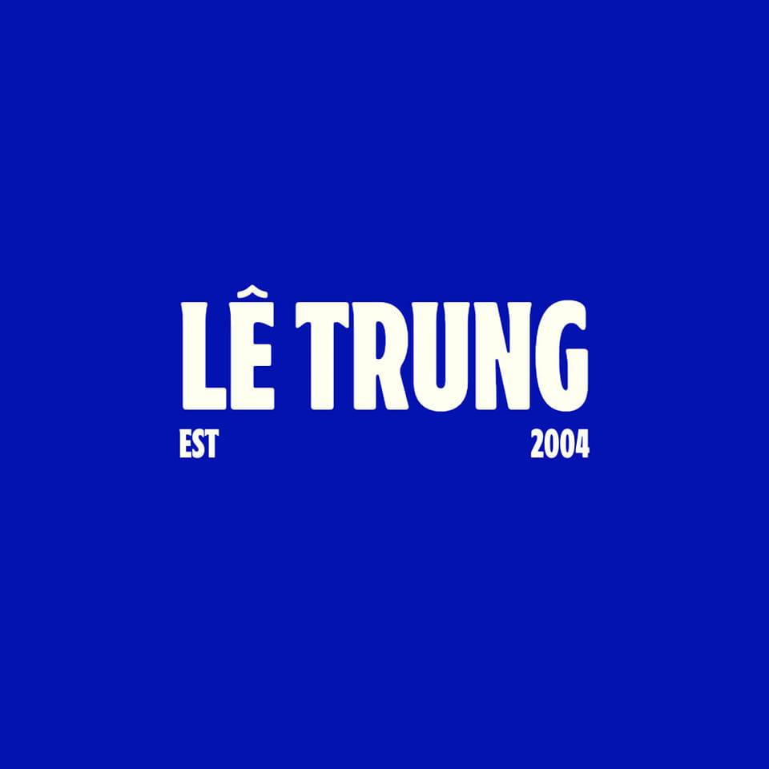

I'm a third-year Computer Science student at International University, passionate about technology and software development. My journey started with a curiosity for how computers work, which gradually turned into a love for coding and building applications.
I have basic knowledge of web development, including HTML, CSS, and JavaScript, along with experience in databases like MySQL. I'm constantly learning new technologies to enhance my skills and explore different areas of software engineering.
I enjoy working on personal projects and collaborating with others to create functional applications. My goal is to become a full-stack developer.
